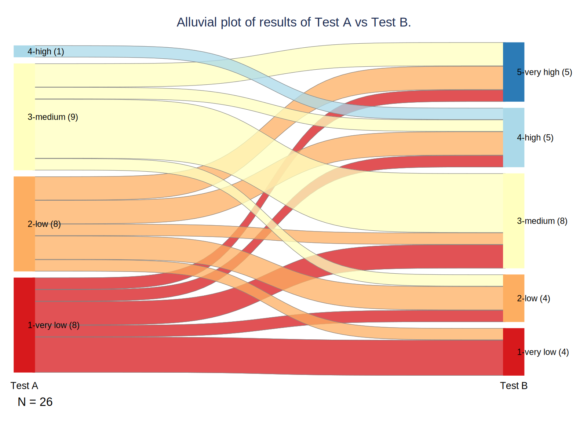

Show the code
// Install user-written commands
net install alluvial, from("https://raw.githubusercontent.com/asjadnaqvi/stata-alluvial/main/installation/") replace
ssc install palettes, replace
ssc install colrspace, replaceCarlos Fernández
March 11, 2024
In this post, I explain how to create an alluvial plot using code in Stata.
An alluvial diagram or plot displays the flow of information from one categorical variable or stage to the next. The term “alluvial” refers to its resemblance to the flow of a river.
Alluvial diagrams are commonly used in the following situations:
For this example, we will use the alluvial command, which requires the installation of the palettes and colrspace commands. The data is a simulation of a comparison of two fictional diagnostic tests, called “Test A” and “Test B”, which can take values such as “1-very low”, “2-low”, “3-medium”, “4-high”, and “5-very high”.
// Input data
clear
input test_b test_a
4 4
1 1
1 1
2 2
3 1
1 2
3 2
2 2
5 2
3 1
3 3
3 3
5 3
4 3
1 1
3 3
4 1
2 3
5 2
4 2
4 2
2 1
5 3
3 3
5 1
3 3
end
// Label data
label var test_a "Test A"
label var test_b "Test B"
label define high_low 1 "1-very low" 2 "2-low" 3 "3-medium" 4 "4-high" 5 "5-very high", replace
label values test_a test_b high_low
// Tabulate
tab test_a test_b
| Test B
Test A | 1-very lo 2-low 3-medium 4-high | Total
------------+--------------------------------------------+----------
1-very low | 3 1 2 1 | 8
2-low | 1 2 1 2 | 8
3-medium | 0 1 5 1 | 9
4-high | 0 0 0 1 | 1
------------+--------------------------------------------+----------
Total | 4 4 8 5 | 26
| Test B
Test A | 5-very hi | Total
------------+-----------+----------
1-very low | 1 | 8
2-low | 2 | 8
3-medium | 2 | 9
4-high | 0 | 1
------------+-----------+----------
Total | 5 | 26 In this fictional study, a total of 26 people underwent both diagnostic tests. We can see in the table that three people obtained a “very low” result in both tests, one person obtained a “very low” result in test A and “low” in test B, etc.
The table itself is informative but does not allow for quick and intuitive information extraction. This is where the alluvial plot comes in.
// Alluvial plot
alluvial test_a test_b, palette(RdYlBu, n(5)) labangle(0) novalues boxwidth(5) offset(10) title("Alluvial plot of results of Test A vs Test B.", size(3)) note ("N = 26") graphregion(color(white)) showtot lwidth(0.01) lcolor(gray) labpos(3)
qui: graph export fig1.svg, width(1600) replace
In the alluvial diagram, the area of the colored zones is proportional to the frequency, so wider “flows” represent more participants.
The graph shows how there is a considerable “transfer” of participants between result levels in the two tests. For example, we see that slightly less than half of those with a “very low” result in Test A also obtained “very low” in Test B, but others obtained “low”, “medium”, “high”, and even “very high” results. We also clearly see how there are no participants with “very high” results in Test A, or that the only participant with a “high” result in Test A also had a “high” result in Test B.
In conclusion, alluvial diagrams provide a visual option for better understanding data flows between categories.